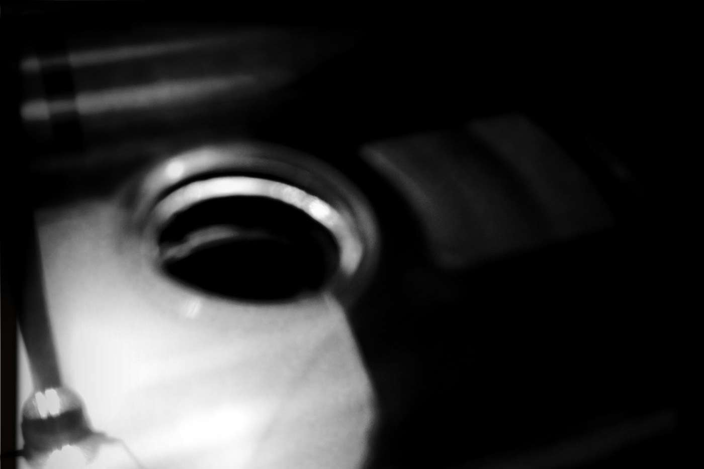

— sound artist.

Magnetic tape cassetteI have been producing various forms of noise, drone, and otherwise experimental sound for over a decade.
My approach to music is one less geared to entertainment, and more towards the exploration of sound as an artform. I find great inspiration in minimalist music and recordings, and love experimenting with subtleties and extremities in tonalty, frequency, duration, texture, and tension.